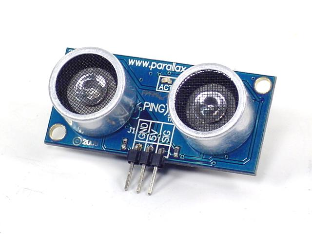

Profile Alat
Tujuan Alat
Berdasarkan Peristiwa yang terjadi pada khususnya kota balikapan yakni banjir dan longsor yang terjadi dibeberapa wilayah balikpapan maka dibuatlah alat yang dapat melakukan deteksi dan juga monitoring indikasi terjadi bencana tersebut.

Alat IoT berbasis ESP32
Monitoring Banjir dan Longsor
Komponen Alat
Berikut ini adalah komponen utama yang digunakan pada alat sebagai berikut :

Board ESP32

Sensor MPU6050
Sensor Ultrasonik
Cara Kerja
Berikut ini adalah sedikit Uraian Cara kerja Alat
Alat ini Berkerja dengan ESP32 sebagai Otak dan sensor sebagai indra untuk mengetahui keadaan yang terjadi dilingkungan tempat alat ini diletakan dan melakukan komunikasi dengan webserver untuk menampilkan data agar dapat dilakukan monitoring jika alat terhubung dengan internet (Wi-fi).
Sensor Ultrasonik akan berkerja sebagai pengukur ketinggian air dengan memantulkan gelombang ultrasonik yang kemudian gelombang yang dipancarkan akan terpantul pada permukaan air, sehingga dari durasi rambat gelombang maka alat akan mendapatkan nilai ketinggian air berdasarkan pembacaan sensor Ultrasonik tersebut.
Lalu sensor MPU6050 atau sensor Gyroscope akan berkerja bedasarkan kemiringan permukaan sensor untuk mengetahui kemiringan permukaan tanah dimana sensor ini ditempatkan berdasarkan nama sensornya alat ini akan membaca hasil pembacaan sensor untuk kemiringan suatu permukaan bidang.